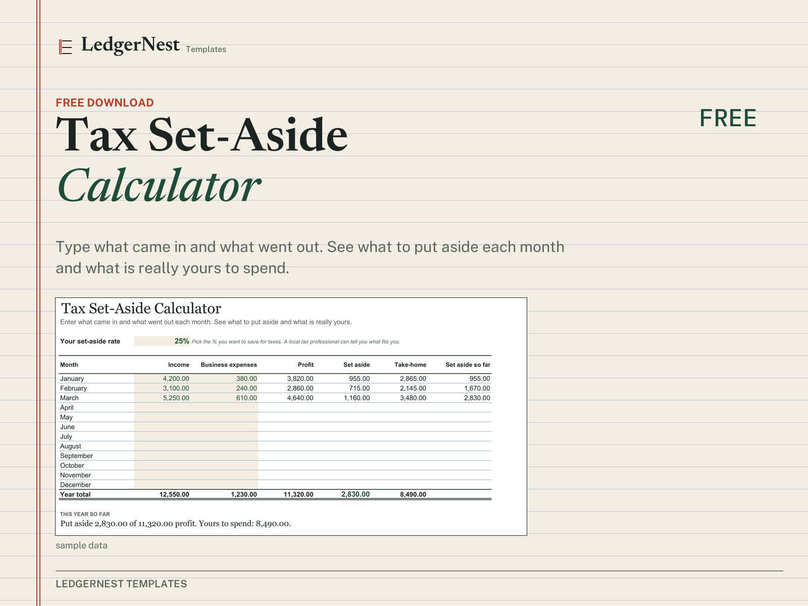

How much should freelancers save for taxes?
Nobody takes tax out of a freelance payment for you. Here is a simple way to decide how much to put aside, and how to make it a monthly habit.
Short answer: many freelancers put aside 25–30% of their profit each month. Profit, not income. The right number for you depends on where you live and how much you earn, so treat it as a starting point and check it with a tax professional.
Start from profit, not from what clients paid
When you work for an employer, tax comes out of your pay before you see it. As a freelancer the whole invoice lands in your account, and it is easy to treat all of it as yours.
In most countries you are taxed on profit: what came in, minus the costs of running the business. Software, equipment, a share of your phone bill and similar business expenses usually come off first. So the first step is to work out profit for the month.
| One month | Amount |
|---|---|
| Income (invoices paid this month) | 4,200.00 |
| Business expenses | −380.00 |
| Profit | 3,820.00 |
| Set aside at 25% | 955.00 |
| Yours to spend | 2,865.00 |
Example numbers. The same row is the first month in our free calculator.
If you set aside 25% of the full 4,200 instead, you would put away 1,050. That is safer, but it can leave you short on cash during the month. Working from profit gives you a number that is closer to what you will actually owe.
Why 25–30% is the usual rule of thumb
The percentage covers more than income tax. In many countries self-employed people also pay social contributions that an employer would normally share. Two examples:
United States
Freelancers pay federal income tax plus self-employment tax. Self-employment tax is 15.3% (Social Security and Medicare) on 92.35% of net earnings, with the Social Security part capped each year. On 3,820 of profit that alone is about 540 (3,820 × 92.35% × 15.3%), before any income tax or state tax. The IRS expects estimated payments four times a year, usually due around 15 April, 15 June, 15 September and 15 January.
United Kingdom
Sole traders pay Income Tax and Class 4 National Insurance on their profits through Self Assessment. The balance is due by 31 January, and once your bill passes a certain level you also make payments on account in January and July.
Add those pieces together and a typical freelancer lands somewhere in the 20–35% range. That is where the 25–30% habit comes from. If you earn more, live somewhere with high local taxes, or are in your first year, aim higher. If your profit is low, you may need less.
Other countries work differently, and rates change. The figures above are general information, not tax advice. A local accountant can tell you the rate that fits your situation in one short call, and it is usually worth it in your first year.
Make it a monthly habit
- Open a separate savings account and call it something plain, like "Tax". Money you cannot see in your everyday account is money you will not spend by accident.
- Once a month, work out profit: income received minus business expenses.
- Move your percentage of that profit into the tax account the same day. If a month makes a loss, move nothing.
- Keep a running total so you can compare it with your bill when it arrives. If the total keeps coming up short, raise your rate by 5 points.
The hard part is not the maths. It is doing it every month, including the busy ones. A small sheet that does the sums for you makes that much easier.

Tax Set-Aside Calculator
Type what came in and what went out each month. It shows what to put aside at your rate, what is yours to spend and your total so far. Excel and Google Sheets.
Get it freeThis guide is general information to help you plan. It is not tax, legal or financial advice. Tax rules differ by country and change over time; check your own obligations with a qualified professional.